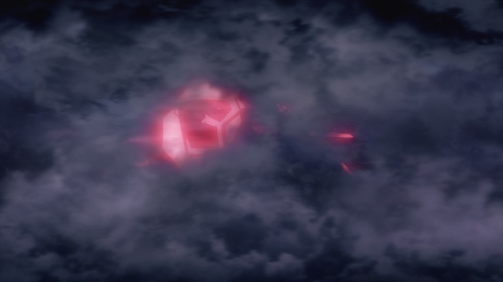

Back
More planes in the background
Differently positioned smoke
Plane closer to camera, more effects
Downed plane added to shot
Extra plane, more particles
Better looking explosion, yellow flash removed.
Spacing is different, Better shading, some redraws
The new linework is evident when Rall flies by the camera
Nipa is shaded better, lasers have more detail
Added bullet Sparks
Better shaded muzzle flash, alongside sparks
Character outlines, redder lasers
Lasers, outlines
Outlines, more sparks
Explosion is less orange
Nao has been redrawn and is nao in focus
Much sharper redraw
Hikari's hair has flatter shading
She no longer shrinks for a few frames, the running animation is smoother
Blur removed, shading improved
Hikari and her training striker are shaded better
Hikari headbutts the camera, causing the blur algorithm to change intensity.
Redrawn linework
Sharper detail lines
Hikari's graceful flying has been redrawn
The ship is lit lighter, the bow is now leaving a larger wake, and the sea has a finer texture
The witches have tighter poses, and have improved outlines
Blur removed, outlines added
Carrier is moving across the frame slower, and is slightly lighter
Whatshernames spooky doll mouth and dead eyes have been fixed. Additionally, Takami has a dot of eye-shine.
Takami has two eye shinies this time
Whatshernames mouth flaps have been retimed
Subtle decensored nipple
Hikari keeps her mouth open rather than talking silently
More decensoring
Eyes are shaded slightly lighter, nipple added
Less derpy face
Slightly sharper water line thing on her left (your right)
Eyecatch comes in a frame too early. Not something I'd normally mention, but it threw the timing out for the rest of the episode, which was very irritating to work around
Reshine'd eyes and redrawn mouth
The centreline of Takami's uniform is very slightly thicker. Did you notice?
This shot has been redrawn to better fit the time of day.
Some students have different hair colours
And again
yet another redrawn flying scene
This whole shot has been slightly zoomed out, the ocean and sky are retextured, and the witches have bolder lines and redrawn facial features. Also note the redrawn tail, it was kinda stumpy and hard to notice in the tv version.
Retextured ocean.
Better lighting
The next few shots have subtly different lighting in the background, not worth commenting on;
Different mouth flap
Ocean retexture and lighting differences
The better lighting makes it easier to make out ship details.
Less blur on yet another redrawn Hikari
Still CG, but her angry redrawn face amuses me
This quality flying looks way better
Lighting
Repositioned elements, much better water
Brighter lighting flashes
Brighter core
